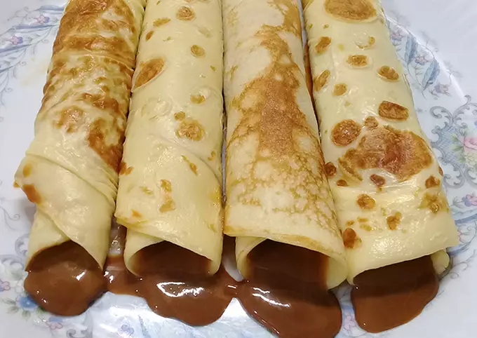

-Harina 300 gramos
-Huevos 3
-Sal una pizca
-Leche 500 mililitros
-Dulce de leche a gusto
Utensilios:Bowl, batidora, sarten, cucharón
*Primer paso: En el bowl ponemos todos los ingredientes menos el dulce de leche y con una batidora, mezclamos bien hasta obtener una pasta, no debe de quedar ni muy líquida ni muy espesa.
*Segundo paso: Dejamos reposar unos 15 minutos aprox, y luego colocamos un chorrito de aceite en la sartén .
*Tercer paso: Con un cucharón ponemos una porción de la masa en la sartén y dejamos freír, luego de 30 segundos damos vuelta y estará listo.
*Cuarto paso: Con una cuchara ponemos dulce de leche en el panqueque, lo enrollamos y quedará listo para disfrutar.
